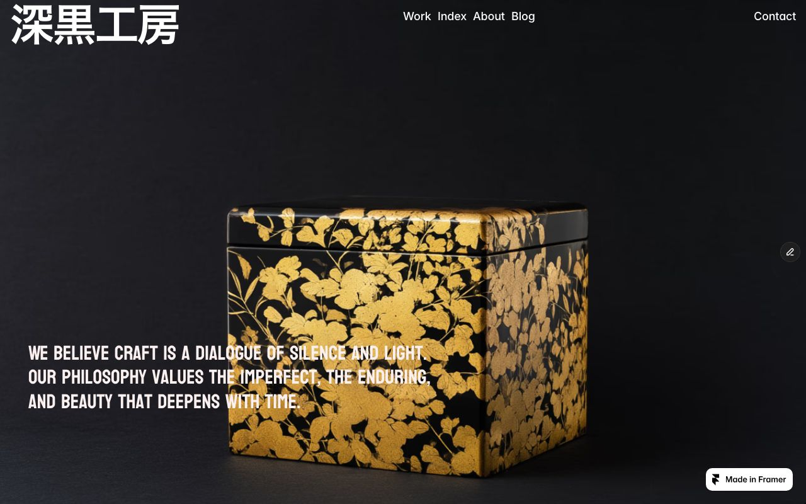
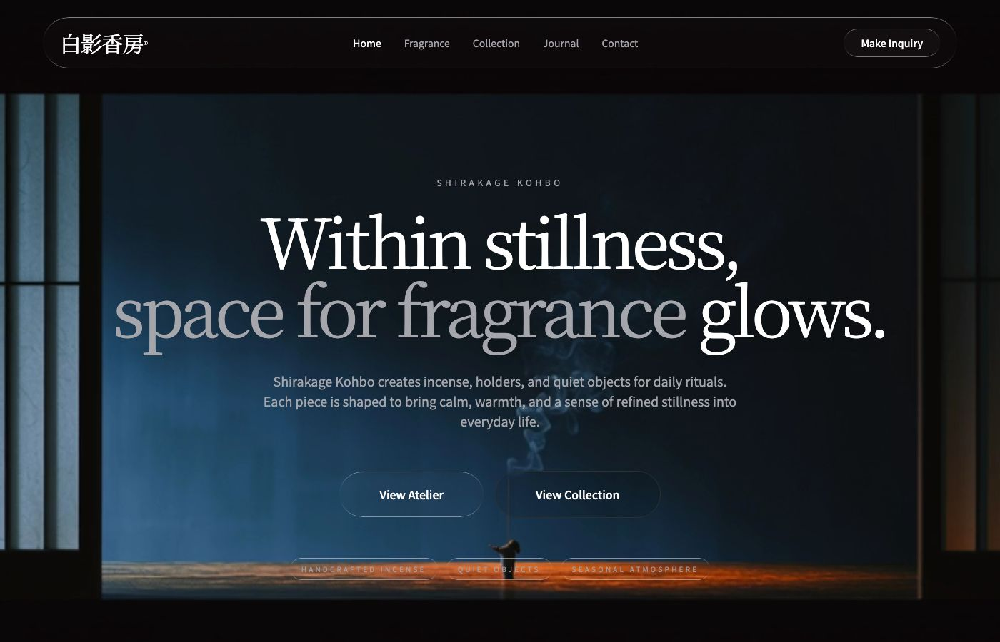
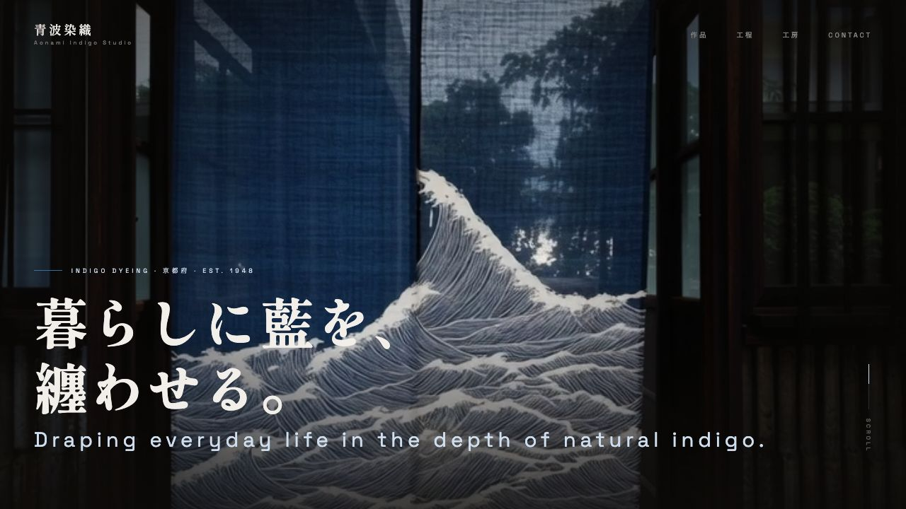
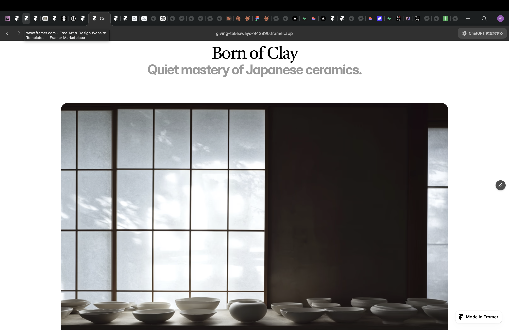
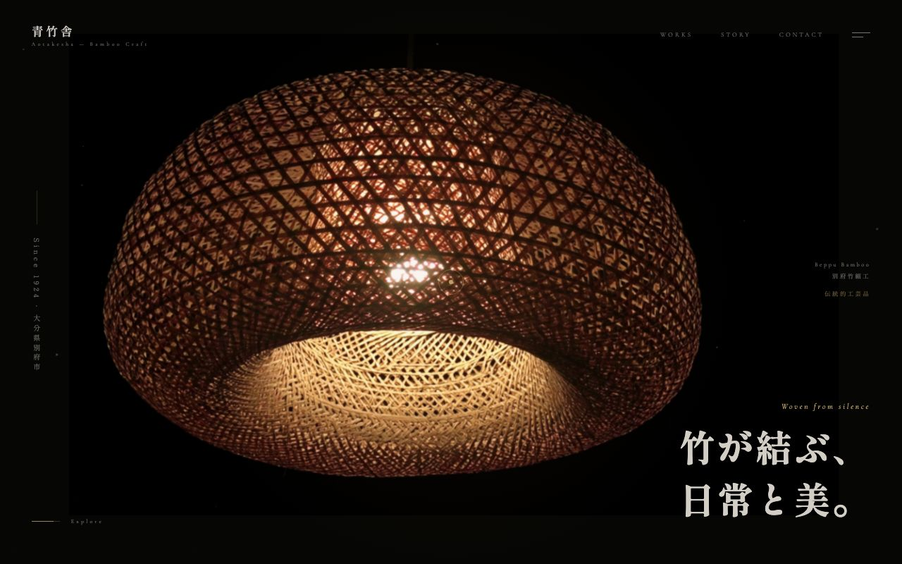
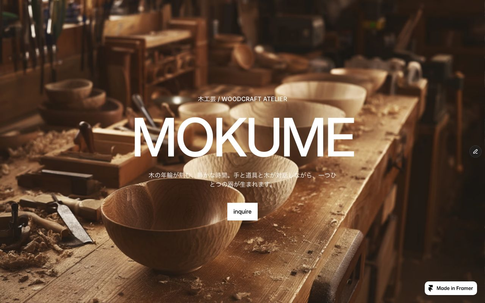

Japan Craft × Global Web
職人の技術が、
サイトに負けていませんか？
工房の世界観を、正しくウェブで表現する。
英語サイトがない。海外に売る方法がわからない。
その壁を、私たちが丸ごと越えます。
Scroll
Japan Craft × Global Web
工房の世界観を、正しくウェブで表現する。
英語サイトがない。海外に売る方法がわからない。
その壁を、私たちが丸ごと越えます。
海外からの問い合わせがゼロ。英語ページがない。検索しても出てこない。
技術は本物なのに、デジタルで機会損失が続いています。
Phase 01
工房の世界観を正しく表現するWebサイトを制作。デザイン・コピー・構成を一からつくり直し、国内外のお客様に届く「工房の顔」を整えます。
¥150,000〜 / 制作一式（税別）

Phase 02
まずはホームページ改善を主役にしながら、必要に応じて英語ページ、英語導線、海外に向けた見せ方の整理まで対応します。
¥150,000〜 / 英語対応込み（税別）

🏺
汎用制作会社と違い、伝統工芸の美学と文化的背景を深く理解した上でデザインします。
🌏
英語ページ・コピーライティングを標準装備。海外からの問い合わせを受け取れる状態で納品。
📱
打ち合わせ・制作・納品まですべてオンラインで完結。全国どこの工房様も対応。
🤝
納品で終わらない。海外からの最初の注文が入るまで、一緒に動き続けます。
Works
各工房の世界観に合わせ、ゼロからデザインした英語サイトの例です。




Pricing
初期費用を抑えてスタートし、成果を見ながら拡張できます。
HP制作
HP制作・改善
¥150,000
〜 / 制作一式（税別）
英語対応
おすすめ英語対応・導線整理
¥150,000
〜 / 英語対応込み（税別）
継続サポート
Ongoing Support
¥30,000
〜 / 月（税別）
まったく問題ありません。英語対応はすべて私たちが担当します。ヒアリングや打ち合わせはすべて日本語で行います。
通常4〜6週間です。工房様からの素材提供（写真・情報など）のタイミングにより前後します。
はい。Starterまたは Standardのみのご依頼も承っています。段階的なスタートをおすすめしています。
すべてオンラインで完結するため、全国どこでも対応可能です。Zoom + メールで進めています。
今のサイトURLを教えていただくだけ。現状の問題点・改善案を無料でフィードバックします。費用は一切かかりません。